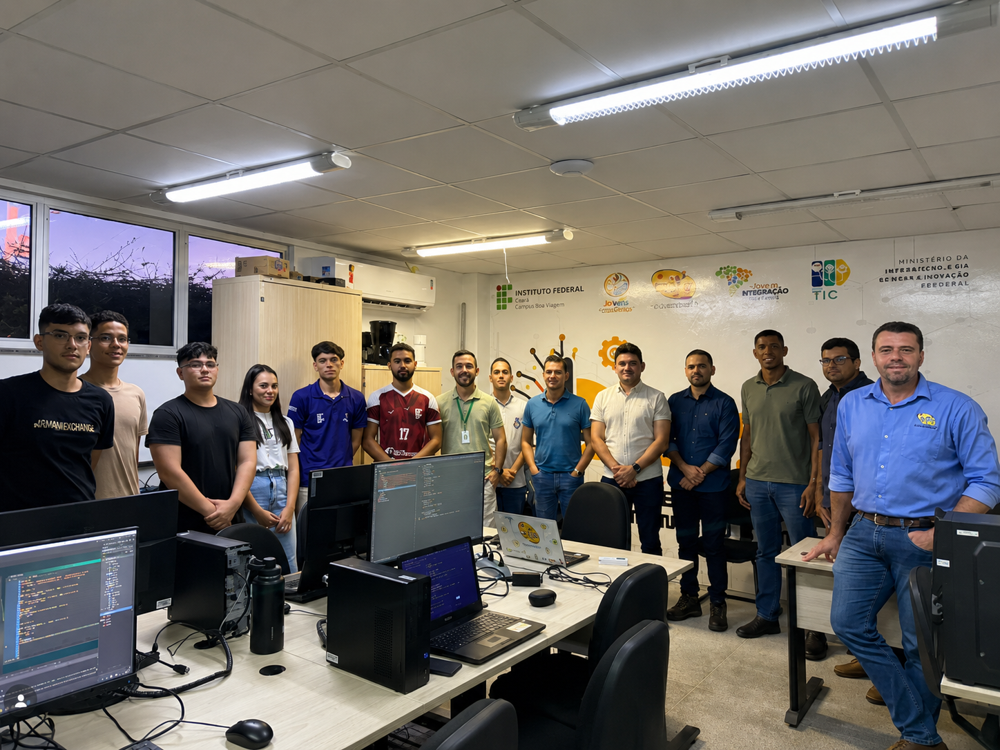
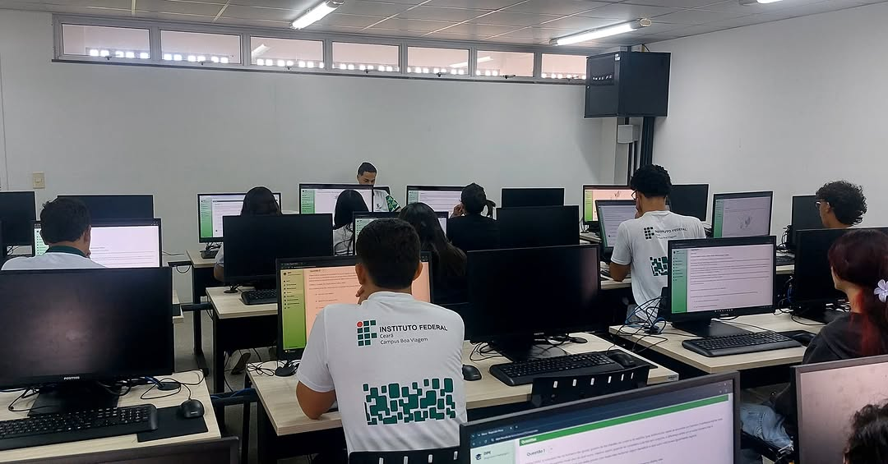
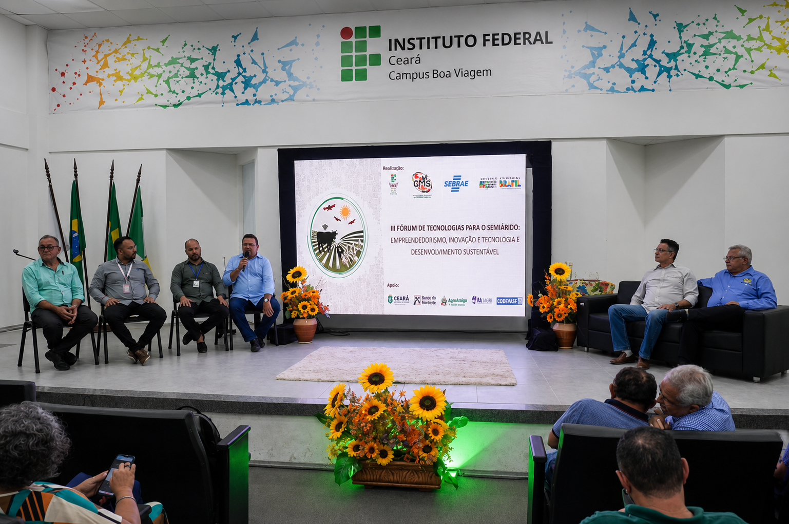

Como ADS transforma ideias em soluções reais?
O curso de Análise e Desenvolvimento de Sistemas incentiva os estudantes a desenvolver soluções tecnológicas que geram impacto na comunidade. Por meio de projetos, pesquisa e extensão, os alunos aplicam os conhecimentos adquiridos em sala de aula para resolver problemas reais utilizando tecnologia e inovação.
Desenvolvimento Web
Criação de sites, sistemas web e aplicações modernas utilizando HTML, CSS, JavaScript e outras tecnologias do mercado.
Banco de Dados
Modelagem, organização e gerenciamento de dados para aplicações acadêmicas e empresariais.
Internet das Coisas (IoT)
Desenvolvimento de soluções inteligentes com sensores, automação e monitoramento voltados para o agronegócio e o sertão.
Inteligência Artificial
Aplicação de algoritmos inteligentes para automação, análise de dados e desenvolvimento de soluções inovadoras.
Projetos e Extensão
Participação em projetos de pesquisa, inovação e extensão que aproximam a tecnologia das necessidades da comunidade.
Mercado de Trabalho
Formação voltada para atender às demandas do mercado, preparando profissionais para empresas públicas, privadas e startups.
Impacto da Extensão no Curso de ADS
Os projetos de extensão permitem que os estudantes de Análise e Desenvolvimento de Sistemas apliquem seus conhecimentos em soluções tecnológicas reais, aproximando o IFCE da comunidade por meio da inovação, pesquisa aplicada e transformação digital.
Projetos Tecnológicos
Desenvolvimento de sistemas web, aplicações, dispositivos inteligentes e soluções digitais voltadas para atender às necessidades da comunidade e do setor produtivo.
Integração com a Comunidade
Aplicação prática dos conhecimentos adquiridos em sala de aula por meio de projetos que promovem inclusão digital, inovação e impacto social.
Parcerias e Inovação
Colaboração com empresas, instituições públicas e organizações para desenvolver soluções tecnológicas alinhadas às demandas do mercado e da região.
Experiência Profissional
Os projetos de extensão fortalecem o portfólio dos estudantes, desenvolvem competências técnicas e ampliam as oportunidades de atuação no mercado de tecnologia.
Projetos e Oportunidades em ADS
O curso de Análise e Desenvolvimento de Sistemas incentiva a participação dos estudantes em projetos de pesquisa, inovação e extensão, proporcionando experiências práticas e preparando profissionais para os desafios do mercado de tecnologia.

CIDTS
O Centro de Inovação e Desenvolvimento Tecnológico e Social promove projetos voltados à inovação, empreendedorismo, pesquisa aplicada e desenvolvimento de soluções tecnológicas para a comunidade.
Conhecer projeto
Laboratórios e Práticas
Os laboratórios do curso proporcionam aos estudantes experiências práticas no desenvolvimento de software, banco de dados, redes, Internet das Coisas e tecnologias emergentes.

Eventos e Capacitações
Palestras, workshops, minicursos, hackathons e eventos aproximam os estudantes do mercado de tecnologia e fortalecem a troca de conhecimentos com profissionais da área.